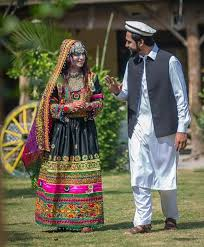

The national dress of Pakistan is the shalwar kameez, a unisex garment
widely-worn,and national dress,of Pakistan. When women wear the shalwar-kameez in some regions, they
usually wear a long scarf or shawl called a dupatta around the head or neck. The dupatta is also employed as a
form of modesty—although it is made of delicate material, it obscures the upper body's contours by passing over
the shoulders. For Muslim women, the dupatta is a less stringent
alternative to the chador or burqa (see hijab and
purdah). Besides the national dress, domestically tailored suits and neckties are often worn by men, and are
customary in offices, schools, and social gatherings.
The fashion industry has flourished in the changing environment of the fashion world. Since Pakistan came into
being, its fashion has evolved in different phases and developed a unique identity. Today, Pakistani fashion is a
combination of traditional and modern dress and has become a mark of Pakistani culture.
Despite modern trends,
regional and traditional forms of dress have developed their own significance as a symbol of native tradition.
This regional fashion continues to evolve into both more modern and purer forms. The Pakistan Fashion Design
Council based in Lahore organizes PFDC Fashion Week and the Fashion Pakistan Council based in Karachi organizes
Fashion Pakistan Week. Pakistan's first fashion week was held in November 2009.